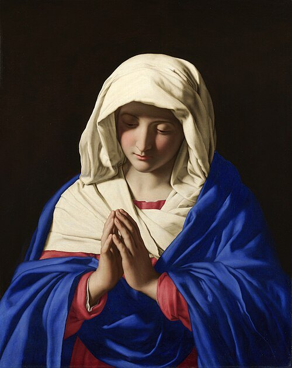
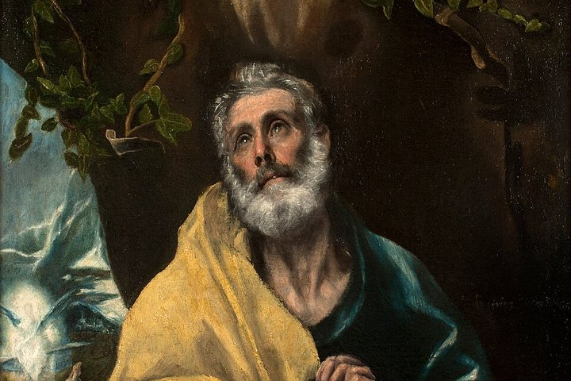
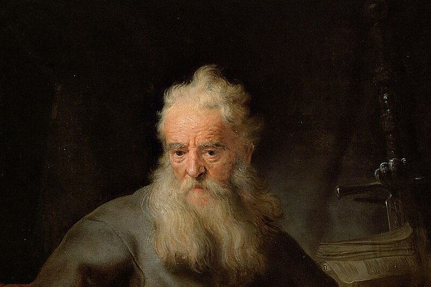
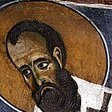
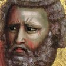
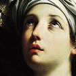
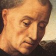
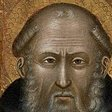

About novenas
What is a novena?
A short guide to the 9 days, and to the saints who pray with us.
9 days, 1 intention
The word novena comes from the Latin novem, “nine.” A novena is 9 days of prayer for a single intention: someone who is sick, a hard decision, a need we cannot meet alone, or thanks for a gift received.
Coming back day after day is the heart of it. Jesus taught His disciples that they ought always to pray and not lose heart
(Luke 18:1). Persevering does not wear God down. It opens us up, so that by Day 9 we often ask with a quieter, more trusting heart.
A devotion that leads to Mass
A novena is a devotion, not a sacrament. It is a way to go deeper into the faith, to come to know God better, and to bring Him what is on our hearts. It never takes the place of the Holy Mass.
The Mass is the Church’s highest worship. In it, Christ’s one sacrifice on the Cross is made present, and He gives Himself to us in Holy Communion (CCC 1366). That is why the Church calls the Eucharist the source and summit of the Christian life
(CCC 1324).
The Church welcomes devotions like the novena (CCC 1675). The Second Vatican Council asked that they flow from the liturgy and lead people back to it, since, in fact, the liturgy by its very nature far surpasses any of them
(Sacrosanctum Concilium 13).
So keep Sunday Mass at the center, and let the novena carry its prayer into the rest of the week. You can bring your novena intention to Mass too: offer it quietly in your heart, or ask your parish to offer a Mass for it.
Where novenas began
Before His Ascension, Jesus told the apostles to wait in Jerusalem for the promised Holy Spirit (Acts 1:4–5). So they went back to the upper room and waited in prayer.
All these with one accord devoted themselves to prayer, together with the women and Mary the mother of Jesus
(Acts 1:14).
They prayed through the 9 days between the Ascension and Pentecost, and on Pentecost the Holy Spirit came upon them (Acts 2:1–4). Christians have long seen those days of waiting, asking and trusting as the first novena, the pattern for every novena since.
The Church still keeps it. In 1897 Pope Leo XIII decreed that a novena to the Holy Spirit be prayed every year before Pentecost, throughout the whole Church (Divinum Illud Munus).

How to pray a novena

Bring 1 intention
Name it honestly before God, as a child speaks to a Father. Each novena here has a space to write it down.
Pray each day for 9 days
About 10 minutes: an opening prayer, a Scripture passage and reflection, the day’s prayer and the closing prayers. If a day is missed, simply pick up where you left off.
Listen as well as ask
The Scripture and reflection are there so prayer becomes a conversation. Often the first thing a novena changes is the person praying it.
Leave the answer to God
We pray as Jesus did in Gethsemane, asking that the Father’s will be done, not ours (Luke 22:42). God always hears. His answer may be yes, not yet, or a grace we did not know to ask for. If an answer seems slow in coming, it is not a sign that we prayed wrongly or too little.
Not a formula
A novena does not work by its number of days or by getting every word right. Jesus warned against heaping up empty phrases (Matthew 6:7), and the Church calls it superstition to expect prayers to work by their outward form alone (CCC 2111). So no novena comes with a guarantee, and chain messages that promise a result if you pass them on are not Catholic prayer. A novena’s worth comes from God’s love, met by a heart that trusts Him.
More than 1 novena at a time?
Yes. A novena is a devotion, not an obligation, so nothing stops you from praying 2 side by side, say one for healing and one for a money worry. Each novena here keeps its own progress. Keep to what you can pray with attention: 10 quiet minutes with God are worth more than 20 rushed ones. Or pray one novena and bring both intentions to it. God hears them all.
Worship and honor
Every novena is, in the end, prayer to God. We worship God alone, Father, Son and Holy Spirit, and we come to the Father through Jesus Christ, the one mediator between God and men
(1 Timothy 2:5).
Catholics also honor Mary and the saints. Honor is not a smaller amount of worship; it is a different thing. Worship, which the Church also calls adoration, is owed to God alone as our Creator, and the Holy Mass is its highest form. Honor is the love and respect we give to those God has made holy, much as we honor our parents.
Why paintings?
The images in these novenas are old masterpieces. We honor a sacred image for the person it shows: the honor paid to sacred images is a ‘respectful veneration,’ not the adoration due to God alone
(CCC 2132).
Praying with pictures
In the app, the day’s Scripture may come with a picture, so you can see the passage as you pray. Christians have long prayed this way. It is often called visio divina, “divine seeing,” and the old Books of Hours set paintings beside their prayers for the same reason: Image and word illuminate each other
(CCC 1160). Each picture is chosen because it shows something true about that day’s verse, never just to decorate, and each is a public-domain work credited beneath it.

God alone
Father, Son and Holy Spirit. Adoration belongs to God alone. The saints do not receive it; they give it, adoring God with us, as the painting shows.
Mary
Honored above all the saints, because God chose her to be the Mother of His Son. She is still a creature, saved by her Son, and she points us to Him.
The Saints
We honor them and learn from their lives, and ask them to pray for us, as we ask one another. Every grace comes from God, through Christ.
Why we ask the saints
Why turn to the saints at all? We do not worship them. When we pray to a saint, we are asking that saint to pray for us, just as we ask our friends to. Scripture tells us to pray for one another
, for the prayer of a righteous man has great power in its effects
(James 5:16).
Death does not end that love, because the saints are not gone. They are alive with God, who is not God of the dead, but of the living; for all live to him
(Luke 20:38).
The Church calls this the communion of saints: one Church made up of those on earth, those being purified, and the saints in heaven (CCC 954). Close to Christ, the saints do not cease to intercede with the Father for us
(CCC 956). So, the Catechism says, we can and should ask them to intercede for us and for the whole world
(CCC 2683).
Scripture gives a glimpse of this in heaven, where the elders who worship before the Lamb hold golden bowls full of incense, which are the prayers of the saints
(Revelation 5:8).
Mary, first among the saints
Mary has a place of her own. At Cana she noticed a need, brought it to her Son, and told the servants, Do whatever he tells you
(John 2:5). Her prayer always leads to Jesus. It takes nothing from His place as the one mediator; it shows His power (CCC 970).

Unlikely saints
Saints are not born with halos. Many began far from God, and a few began about as far away as a person can get.
The saints include a persecutor, a gambler and a man who served Satan, but also a woman sold into slavery as a child (St. Josephine Bakhita) and a teenager who loved video games. What they share is not a perfect start in life but a heart that turned to God and let His grace do the rest.

The denierSt. Peter
A fisherman who promised he would never deny Jesus, then on the night of His arrest denied three times that he even knew Him, and went out and wept (Luke 22:54–62). After the Resurrection, Jesus asked him three times whether he loved Him and told him to feed His sheep (John 21:15–17). He became the rock on whom Christ built His Church (Matthew 16:18).
El Greco, Saint Peter in Tears, about 1580–1589

The persecutorSt. Paul
He approved the stoning of Stephen and dragged Christians off to prison (Acts 8:1–3). Then the risen Christ stopped him on the road to Damascus, and he became the apostle who carried the Gospel across the Roman world.
Pray with him: Growing in Our TalentsRembrandt, The Apostle Paul, 1630s
 The restless heart
The restless heartSt. Augustine
He spent his youth chasing pleasure and success, and lived for years with a woman he never married. He famously prayed for chastity, “but not yet.” His mother, St. Monica, kept praying. He became a bishop and one of the Church’s greatest teachers.
Pray with him: The Gift of KnowledgePhilippe de Champaigne, Saint Augustine, about 1645–1650
 The former Satanist
The former SatanistSt. Bartolo Longo
As a law student in Naples he was drawn into the occult and, by his own account, became a priest of Satan. A friend and a Dominican priest led him back to God. He spent the rest of his life spreading the Rosary at Pompeii, and was canonized in 2025.
Photograph, before 1926
 The gambler
The gamblerSt. Camillus de Lellis
A soldier with a quick temper, a gambling habit and a diseased leg that never healed. After his conversion in 1575 he gave his life to the sick and founded the Camillians, the Ministers of the Sick.
Pray with him: Healing of the SickCristóbal Lozano, Ecstasy of Saint Camillus de Lellis
 The genius
The geniusSt. Thomas Aquinas
One of the greatest minds the Church has known. When he set out to become a Dominican friar, his own family held him captive. Near the end of his life, after an experience at prayer, he said all he had written seemed like straw compared with what had been revealed to him.
Pray with him: Passing an ExamCarlo Crivelli, Saint Thomas Aquinas, 1476
- The vain soldier
St. Ignatius of Loyola
A Basque nobleman who dreamed of glory in battle and the favor of a great lady. In 1521 a cannonball shattered his leg at Pamplona, and he had a bone that stuck out sawn off so his boots would still look fine. With no romances to read while he healed, he read a life of Christ and the lives of the saints, and gave his life to God. He founded the Jesuits.
Pray with him: Big Life DecisionsPeter Paul Rubens, Saint Ignatius of Loyola, about 1620–1622
 The misfit
The misfitSt. Joseph of Cupertino
Slow at his studies and so clumsy that the Capuchins sent him away. The Conventual Franciscans took him in as a servant. He became a priest anyway, and was known for ecstasies in prayer so deep that witnesses said he rose off the ground.
Pray with him: Passing an ExamPlacido Costanzi, oil sketch, 1750
 The juggler
The jugglerSt. John Bosco
A poor farm boy who lost his father as a toddler, he learned juggling and conjuring tricks to gather other children, then led them in prayer. As a priest in Turin he gave his life to abandoned young people and founded the Salesians.
Pray with him: Growing in Our TalentsPortrait painting, via ius-sdb.com
 The schoolboy
The schoolboySt. Dominic Savio
No dramatic conversion and no great deeds: a cheerful student at Don Bosco’s school in Turin who did ordinary things well. At his First Communion he resolved that he would rather die than sin. He died at 14, one of the youngest saints who were not martyrs.
Devotional painting, via anastpaul.com
- The gamer
St. Carlo Acutis
A teenager from Milan who loved video games and computers. He went to Mass every day and used his computer skills to build a website about Eucharistic miracles. He died of leukemia at 15 and was canonized in 2025.
If God could make saints of them, He is not finished with any of us.
The intercessors in these novenas
Each novena asks the prayers of 1 to 3 intercessors whose lives fit the intention. Meet them before you begin.
 St. JosephPatron of workers & familiesRelief from Debt and Financial Hardship · Work and Livelihood · Expectant Parents · When Love Is Not Returned · Safe Travels · Peace in the Family
St. JosephPatron of workers & familiesRelief from Debt and Financial Hardship · Work and Livelihood · Expectant Parents · When Love Is Not Returned · Safe Travels · Peace in the Family St. Rita of CasciaPatron of impossible causesRelief from Debt and Financial Hardship · A Desperate or Impossible Case · Peace in the Family
St. Rita of CasciaPatron of impossible causesRelief from Debt and Financial Hardship · A Desperate or Impossible Case · Peace in the Family St. Jude ThaddeusPatron of desperate casesRelief from Debt and Financial Hardship · A Desperate or Impossible Case
St. Jude ThaddeusPatron of desperate casesRelief from Debt and Financial Hardship · A Desperate or Impossible Case St. Raphael the ArchangelPatron of healing & the sickHealing of the Sick · Finding Love · Safe Travels
St. Raphael the ArchangelPatron of healing & the sickHealing of the Sick · Finding Love · Safe Travels St. Camillus de LellisPatron of the sick, nurses & hospitalsHealing of the Sick
St. Camillus de LellisPatron of the sick, nurses & hospitalsHealing of the Sick St. BernadettePatron of the sickHealing of the Sick
St. BernadettePatron of the sickHealing of the Sick St. Joseph of CupertinoPatron of students & those taking examsPassing an Exam
St. Joseph of CupertinoPatron of students & those taking examsPassing an Exam St. Thomas AquinasPatron of students & Catholic schoolsPassing an Exam · Finishing a Thesis
St. Thomas AquinasPatron of students & Catholic schoolsPassing an Exam · Finishing a Thesis St. CajetanPatron of the unemployed & job seekersWork and Livelihood
St. CajetanPatron of the unemployed & job seekersWork and Livelihood St. HomobonusPatron of businesspeople, merchants & tailorsWork and Livelihood
St. HomobonusPatron of businesspeople, merchants & tailorsWork and Livelihood St. Augustine of HippoPatron of theologiansThe Gift of Knowledge · When Love Is Not Returned · Freedom from Habitual Sin · Those Grieving a Loved One
St. Augustine of HippoPatron of theologiansThe Gift of Knowledge · When Love Is Not Returned · Freedom from Habitual Sin · Those Grieving a Loved One St. Albert the GreatPatron of natural scientistsThe Gift of Knowledge · Finishing a Thesis
St. Albert the GreatPatron of natural scientistsThe Gift of Knowledge · Finishing a Thesis St. Hildegard of BingenMystic & Doctor of the ChurchThe Gift of Knowledge
St. Hildegard of BingenMystic & Doctor of the ChurchThe Gift of Knowledge St. Gerard MajellaPatron of expectant mothers & childbirthExpectant Parents
St. Gerard MajellaPatron of expectant mothers & childbirthExpectant Parents St. ElizabethPatron of expectant mothersExpectant Parents
St. ElizabethPatron of expectant mothersExpectant Parents- St. Louis MartinHusband & father, canonized 2015Finding Love
- St. Zélie MartinWife, mother & lacemaker, canonized 2015Finding Love
 St. Ignatius of LoyolaPatron of spiritual exercises & retreatsBig Life Decisions
St. Ignatius of LoyolaPatron of spiritual exercises & retreatsBig Life Decisions St. Francis XavierPatron of missionsBig Life Decisions
St. Francis XavierPatron of missionsBig Life Decisions- St. John Henry NewmanCo-patron of Catholic educationBig Life Decisions
 St. Pier Giorgio FrassatiPatron of young peopleWhen Love Is Not Returned · Genuine Friends and Community
St. Pier Giorgio FrassatiPatron of young peopleWhen Love Is Not Returned · Genuine Friends and Community
St. Basil the GreatDoctor of the Church · friend of St. GregoryGenuine Friends and Community St. Gregory NazianzenDoctor of the Church · called “the Theologian”Genuine Friends and Community
St. Gregory NazianzenDoctor of the Church · called “the Theologian”Genuine Friends and Community- St. Giuseppe MoscatiPhysician, researcher & teacherFinishing a Thesis

St. JoachimPatron of fathers & grandparentsCouples Longing for a Child St. AnneInvoked by couples hoping for a childCouples Longing for a Child
St. AnneInvoked by couples hoping for a childCouples Longing for a Child St. ZechariahFather of St. John the BaptistCouples Longing for a Child
St. ZechariahFather of St. John the BaptistCouples Longing for a Child St. MarthaPatron of servants & hospitalityServing in Ministry · Those Grieving a Loved One
St. MarthaPatron of servants & hospitalityServing in Ministry · Those Grieving a Loved One
St. CeciliaPatron of musiciansServing in Ministry St. Thérèse of LisieuxPatron of missionsServing in Ministry · When God Seems Silent
St. Thérèse of LisieuxPatron of missionsServing in Ministry · When God Seems Silent St. MonicaPatron of mothers & wivesFreedom from Habitual Sin · Peace in the Family
St. MonicaPatron of mothers & wivesFreedom from Habitual Sin · Peace in the Family St. Charles de FoucauldHermit of the SaharaFreedom from Habitual Sin
St. Charles de FoucauldHermit of the SaharaFreedom from Habitual Sin
St. Benedict of NursiaPatron of Europe & of monksGrowing in Our Talents St. John BoscoPatron of young people & apprenticesGrowing in Our Talents
St. John BoscoPatron of young people & apprenticesGrowing in Our Talents St. Paul the Apostle to the GentilesPatron of missionariesGrowing in Our Talents
St. Paul the Apostle to the GentilesPatron of missionariesGrowing in Our Talents St. Francis of AssisiPatron of Italy & ecologyWeary and Wounded Servants · A Sick Pet
St. Francis of AssisiPatron of Italy & ecologyWeary and Wounded Servants · A Sick Pet- St. John of the CrossDoctor of the Church; patron of Spanish poetsWeary and Wounded Servants
- St. Teresa of CalcuttaFounder of the Missionaries of CharityWeary and Wounded Servants
- St. Jane Frances de ChantalCo-founder of the VisitationWhen God Seems Silent
 St. Francis de SalesDoctor of the ChurchWhen God Seems Silent
St. Francis de SalesDoctor of the ChurchWhen God Seems Silent- St. Frances Xavier CabriniPatron of immigrantsSafe Travels

St. Anthony the AbbotProtector of animalsA Sick Pet St. Martin de PorresFriend of the sick, the poor & animalsA Sick Pet
St. Martin de PorresFriend of the sick, the poor & animalsA Sick Pet- St. Elizabeth Ann SetonFirst native-born American saintThose Grieving a Loved One
About this site
Pray a Novena is a small, free library of Catholic novenas, made by Chav so that anyone can pray one day at a time. It is a personal project, not an official Church publication, and it has no ads, no accounts and nothing to buy.
Why I made this
I’m Chav, a grateful Roman Catholic. My faith took root at Don Bosco Technical Center in Cebu, Philippines, so I am a Bosconian at heart, and today I serve at The Feast, a Catholic prayer gathering of the Light of Jesus Family.
I teach computer science, software engineering and AI at a college, and I also build software as a freelancer. Inspired by St. Carlo Acutis, I want to use those gifts to help people pray, and to give all the glory to God.
About these prayers
The traditional prayers here, such as the Our Father, the Hail Mary, the Glory Be and the Memorare, are the Church’s own. Scripture is quoted from the Revised Standard Version, Catholic Edition, and checked word for word.
The opening prayers, reflections and daily prayers are new, written for this site with the help of AI. They aim to be faithful to Scripture and the teaching of the Church, but no priest has reviewed them yet, and they carry no imprimatur (a bishop’s approval to publish). Pray them as a private devotion, and take any question to your parish priest.
Found a mistake?
If you notice an error in a prayer, a Scripture reference or a saint’s story, please email hey.there.chav@gmail.com so it can be corrected. Questions and suggestions are welcome at the same address. How this site handles your data is on the privacy page.
“Since we are surrounded by so great a cloud of witnesses, … let us run with perseverance the race that is set before us.”Hebrews 12:1 Choose a novena